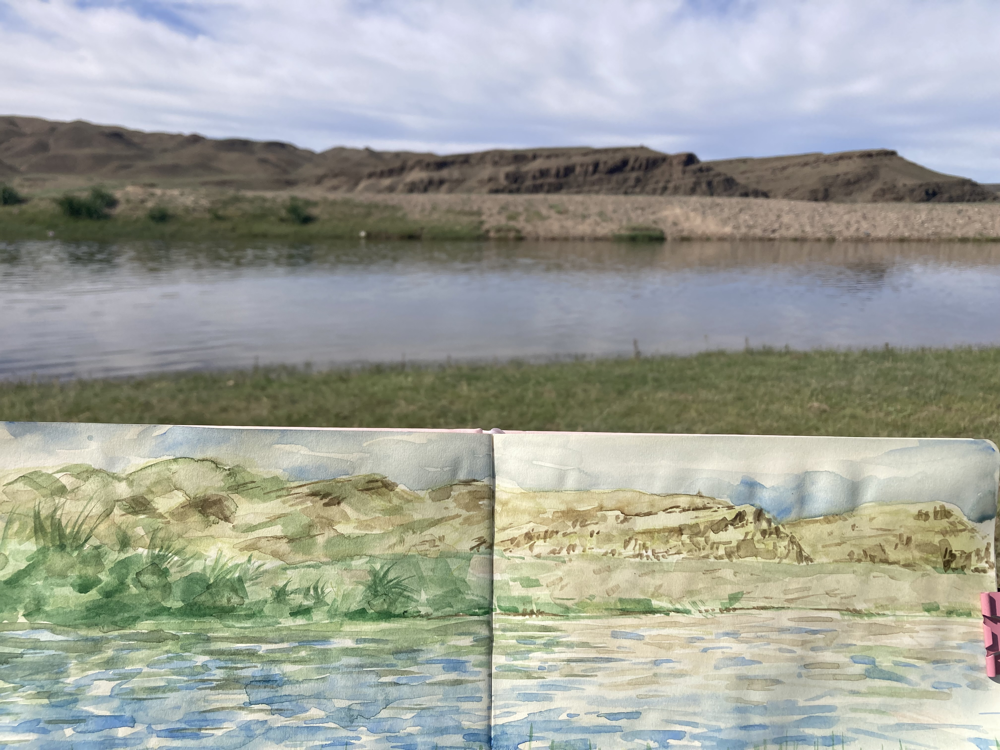

Here is a picture of a plein air painting I did over the summer.
I went back home for the summer and my family and I got to travel and see a lot of beautiful things.
We saw my mom's home province Govi Altai, but we also visited Khovd, Zavkhan, Arkhangai, Uvurkhangai and Bayankhongor.
My favorite location was Zavkhan. It really has all the natural wonders. Deserts, mountains, greenery, rivers, lakes, forests, and even oasis!
Below is a link to Google: Google
<---Video from the oasis!